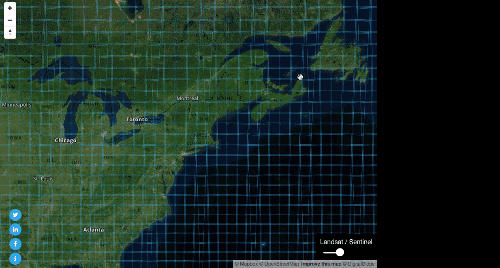

Click on Tile
Satellite Search
A simple and light interface to search for AWS Landsat-8, Sentinel-2 and CBERS-4 Public Datasets
HowTo
- Zoom / Pan map into your area of interest (AOI)
- Select the satellite you want on the top right
- Click on the blue tile covering the AOI
- Click on the item of interest on the image list on the left
- Scroll through the available images
- Click on the preview button to get more download option
- Click on AWS/USGS logo to access summary product page
- Preview image bands combinations
Info
Landsat/Sentinel/CBERS search results is powered by RemotePixel Satellite API.
Images previews are from Landsat, Sentinel and CBERS AWS Public Dataset.
This project is powered by Mapbox-GL API and the awesome vector tile technology develloped by Mapbox.
Continue reading: Blog post on RemotePixel.ca
Public dataset on AWS
Landsat-8 data available on AWS are in Level 1T:
Standard Terrain Correction (Level 1T) - provides systematic radiometric and geometric accuracy by incorporating ground control points while employing a Digital Elevation Model (DEM) for topographic accuracy. Geodetic accuracy of the product depends on the accuracy of the ground control points and the resolution of the DEM used: Ground control points used for Level 1T correction are derived from the GLS2000 data set. DEM sources include SRTM, NED, CDED, DTED, GTOPO 30, and GIMP.Info: http://landsat.usgs.gov/
Sentinel-2 data available on AWS are in Level 1C:
Level-1C processing includes radiometric and geometric corrections including ortho-rectification and spatial registration on a global reference system with sub-pixel accuracy. Level-1C processing is broken down into the following steps: - Tiles association: selection of pre-defined tiles intersecting the footprint of the required image. - Resampling grid computation: enabling linking of the native geometry image to the target geometry image (ortho-rectified). - Resampling of each spectral band in the geometry of the ortho-image using the resampling grids and an interpolation filter. Calculation of the TOA reflectances also occurs in this step. - Masks computation: cloud and land/water masks are generated. - Imagery compression of the resultant Level-1C imagery via the JPEG2000 algorithm and a GML geographic imagery-encoded header.Info: https://sentinel.esa.int
Reflectance, often between 0 and 1, is converted into integer values, in order to preserve the dynamic range of the data by applying a fixed coefficient (1000 by default).Info: https://sentinel.esa.int
CBERS-4:
DEMO, more info soon.
Contribute
Source code of the project is on GitHub.
Landsat, Sentinel and CBERS services are also open-source GitHub.
Contact
Questions or comments to contact@remotepixel.ca
Thanks


Version: 4.0